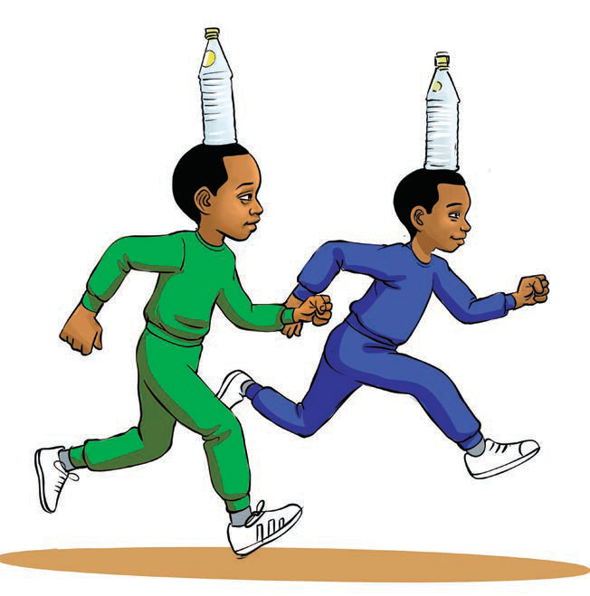

Figure 4: Pupils running with bottles balanced on their heads
8.The winner is the one who will be the first to cross the finish line without dropping the bottle.
Activity 3
Practise running with a bottle balanced on your head.